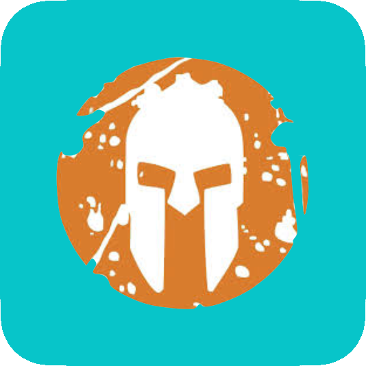
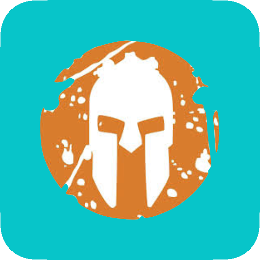

Shortcuts

 



I've faced many challenges in life.
During The Spartan Obstacle Course Race, I learnt
how to peserverse and persist. I could complete all
the obstacles except one. The rope climbing obstacle
always hinders my progress on the race,
so in my last race, I used the scaffolding
erected to help me reach the top. My preferred
form of excersising is through
cycling. Usually, every day I would cycle around
5 kilometres so that I can play the computer.
To have proof to my father that I cycled 5
kilometres, I use strava to track my
cycling
(This is my account, check it out!)
Other than cycling, I also do rock climbing a
lot, usually at Climb Central in
Kallang Wave Mall. The first time I went,
climbing to the top came naturally to me. I
enjoy rock climbing, but as of January 2020, I saw
Climb Central's automatic belaying system fail and a
boy fall off the wall. Lukily for him,
the wall he was climbing was not very tall
and he only sustained a few injuries.
Copyright © 2020 JK. All rights reserved